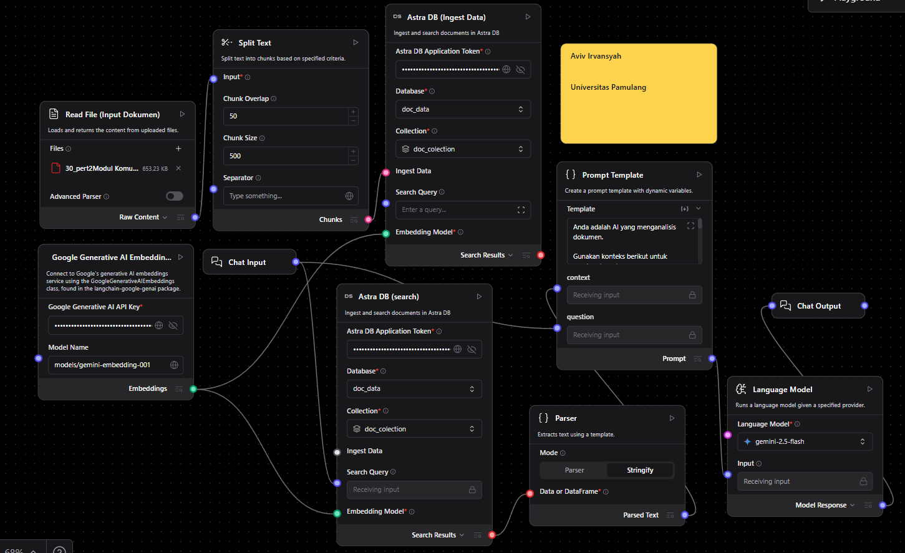
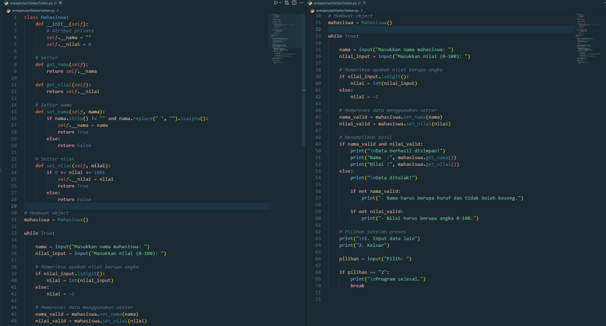
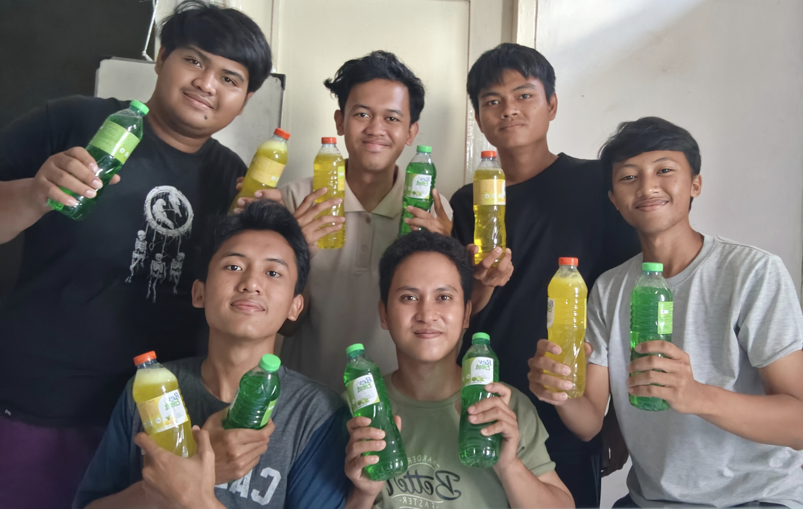

Aviv Irvansyah
Tentang Saya
Saya adalah mahasiswa Teknik Informatika yang sedang mengembangkan kemampuan di bidang teknologi dan pemrograman. Saat ini saya mempelajari berbagai hal seperti pengembangan website, pemrograman, jaringan komputer, database, serta teknologi AI melalui perkuliahan, project, dan pembelajaran mandiri. Saya senang mencoba hal-hal baru dan menerapkan apa yang saya pelajari ke dalam project untuk menambah pengalaman dan pemahaman.
Selain di bidang teknologi, saya memiliki pengalaman di bidang warehouse yang mengajarkan saya tentang ketelitian, kedisiplinan, kerja sama tim, dan tanggung jawab. Saya juga pernah terlibat dalam project Research and Development produk rumah tangga, mulai dari pengembangan formulasi, pengujian, hingga evaluasi produk. Berbagai pengalaman tersebut membantu saya untuk terus belajar, memecahkan masalah, dan mengembangkan kemampuan baik secara teknis maupun nonteknis.
Project
Beberapa project yang pernah saya kerjakan selama belajar dan mengembangkan kemampuan di bidang teknologi.

AI Agent dengan Langflow
Membuat project AI Agent menggunakan Langflow sebagai platform visual untuk merancang dan menghubungkan berbagai komponen dalam alur kerja kecerdasan buatan. Dalam project ini saya mempelajari bagaimana model AI dapat dihubungkan dengan proses input, pemrosesan data, dan output agar dapat menghasilkan respons berdasarkan informasi yang diberikan oleh pengguna.
Project ini juga menggunakan konsep pemrosesan dokumen dan Retrieval Augmented Generation (RAG), sehingga sistem dapat mengambil informasi dari sumber data yang tersedia sebelum menghasilkan jawaban. Melalui project ini, saya mendapatkan pengalaman dalam memahami alur kerja AI, integrasi model, pemrosesan data, serta bagaimana teknologi AI dapat diterapkan untuk membuat sistem yang lebih interaktif dan membantu pengguna dalam mencari informasi.

Project Pemrograman
Membuat beberapa program menggunakan C++ dan Python dengan menerapkan konsep dasar pemrograman.

Project Research and Development
Terlibat dalam project Research and Development (R&D) untuk mengembangkan produk rumah tangga, mulai dari penyusunan formulasi, proses pencampuran, hingga pengujian produk.
Project ini melatih saya dalam melakukan eksperimen, mengevaluasi hasil, memecahkan masalah, serta melakukan perbaikan formulasi agar sesuai dengan target produk.